Hier sind die 120 neuesten von 2.385 Materialien. Alle im Material-Finder ansehen

Materialpaket Advent und Winter für die 6. Klasse: 7 Lesespurgeschichten mit Rätselaufgaben (Weihnachtsbasar, Saturnalien, Lichterfeste & mehr)

Lesespur: Der Vorlesetag: gut vorlesen, gespannt zuhören – Lesespurgeschichte mit Rätseln (Klasse 6)
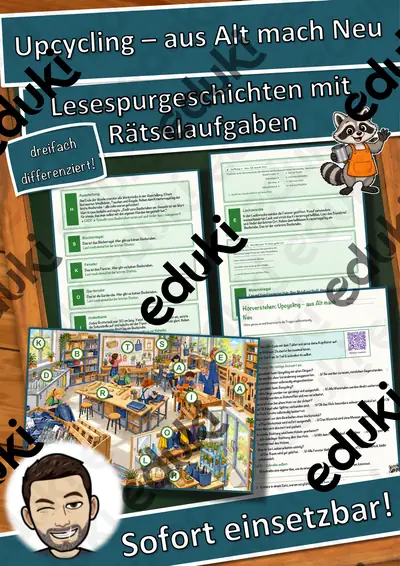
Lesespur: Upcycling: aus Alt mach Neu – Lesespurgeschichte mit Rätseln (Klasse 6)
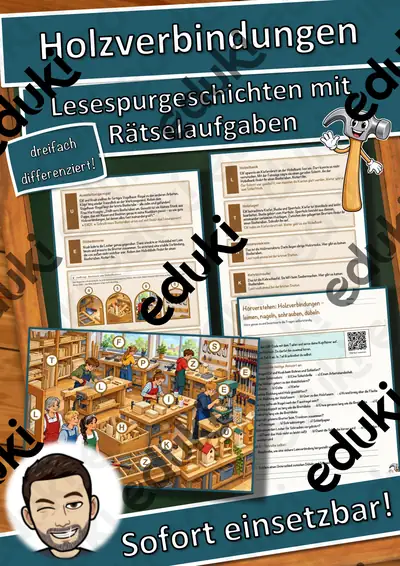
Lesespur: Holzverbindungen: leimen, nageln, schrauben, dübeln – Lesespurgeschichte mit Rätseln (Klasse 6)

Lesespur: Sagen: geheimnisvolle Geschichten aus alter Zeit – Lesespurgeschichte mit Rätseln (Klasse 6)

Lesespur: Was eine Gemeinde alles leistet: von Wasser bis Winterdienst – Lesespurgeschichte mit Rätseln (Klasse 6)

Lesespur: Lärm, Musik und Gehör: so schützt du deine Ohren – Lesespurgeschichte mit Rätseln (Klasse 6)

Lesespur: Die Stimme und der Chor: wie wir singen – Lesespurgeschichte mit Rätseln (Klasse 6)

Lesespur: Symbole der Weltreligionen – Lesespurgeschichte mit Rätseln (Klasse 6)

Lesespur: Jeder ist einzigartig – Lesespurgeschichte mit Rätseln (Klasse 6)
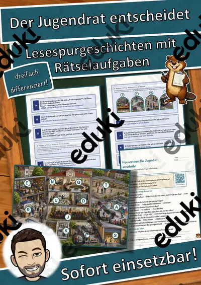
Lesespur: Der Jugendrat entscheidet – Lesespurgeschichte mit Rätseln (Klasse 6)

Verheißung Lückentext mit Wortspeicher Hörverstehen und Suchsel
Taktarten Lückentext mit Wortspeicher Hörverstehen und Suchsel
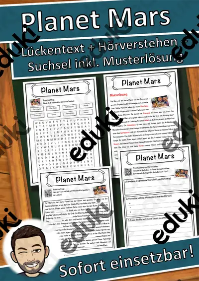
Planet Mars Lückentext mit Wortspeicher Hörverstehen und Suchsel
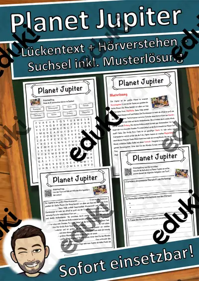
Planet Jupiter Lückentext mit Wortspeicher Hörverstehen und Suchsel

Peripheriegeräte Lückentext mit Wortspeicher Hörverstehen und Suchsel

Neolithische Revolution Lückentext mit Wortspeicher Hörverstehen und Suchsel

Lateralität Lückentext mit Wortspeicher Hörverstehen und Suchsel

Josef und seine Brüder Lückentext mit Wortspeicher Hörverstehen und Suchsel

Hoffnung auf Vollendung Lückentext mit Wortspeicher Hörverstehen und Suchsel

Himmelfahrt Lückentext mit Wortspeicher Hörverstehen und Suchsel

Hell-Dunkel-Kontrast Lückentext mit Wortspeicher Hörverstehen und Suchsel

Form folgt Funktion Lückentext mit Wortspeicher Hörverstehen und Suchsel

Figur-Hintergrund-Wahrnehmung Lückentext mit Wortspeicher Hörverstehen und Suchsel

Farbe-an-sich-Kontrast Lückentext mit Wortspeicher Hörverstehen und Suchsel

Familiennamen Lückentext mit Wortspeicher Hörverstehen und Suchsel
Erwartung Lückentext mit Wortspeicher Hörverstehen und Suchsel
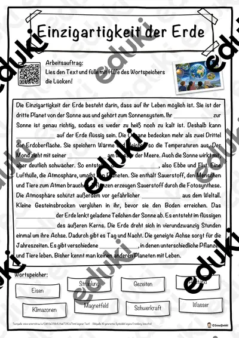
Einzigartigkeit der Erde Lückentext mit Wortspeicher Hörverstehen und Suchsel
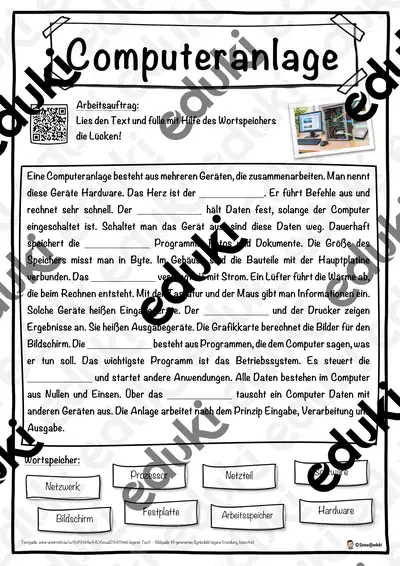
Computeranlage Lückentext mit Wortspeicher Hörverstehen und Suchsel

Brennen von Ton Lückentext mit Wortspeicher Hörverstehen und Suchsel

Bären – Hörverstehen mit Lückentext (interaktiv)

Butterfahrt – Hörverstehen mit Lückentext (interaktiv)

Burgund – Hörverstehen mit Lückentext (interaktiv)

Burgenland – Hörverstehen mit Lückentext (interaktiv)

Bunker – Hörverstehen mit Lückentext (interaktiv)

Bundestagswahl 2025 – Hörverstehen mit Lückentext (interaktiv)
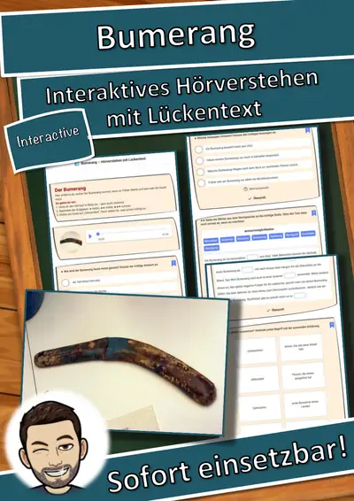
Bumerang – Hörverstehen mit Lückentext (interaktiv)

Buddha – Hörverstehen mit Lückentext (interaktiv)

Buckingham Palace – Hörverstehen mit Lückentext (interaktiv)

Buckelwal – Hörverstehen mit Lückentext (interaktiv)

Buchen – Hörverstehen mit Lückentext (interaktiv)

Brüssel – Hörverstehen mit Lückentext (interaktiv)

Zypern – Hörverstehen mit Lückentext (interaktiv)

Bretagne – Hörverstehen mit Lückentext (interaktiv)

Brügge – Hörverstehen mit Lückentext (interaktiv)

Bronzezeit – Hörverstehen mit Lückentext (interaktiv)

Bregenz – Hörverstehen mit Lückentext (interaktiv)

Braunbär – Hörverstehen mit Lückentext (interaktiv)

Bratwurst – Hörverstehen mit Lückentext (interaktiv)

Brombeere – Hörverstehen mit Lückentext (interaktiv)

Brezel – Hörverstehen mit Lückentext (interaktiv)

Brandenburg an der Havel – Hörverstehen mit Lückentext (interaktiv)

Bozen – Hörverstehen mit Lückentext (interaktiv)

Boxer (Hund) – Hörverstehen mit Lückentext (interaktiv)

Boston – Hörverstehen mit Lückentext (interaktiv)

Brennnessel – Hörverstehen mit Lückentext (interaktiv)

Bremsen (Insekten) – Hörverstehen mit Lückentext (interaktiv)

Bosnien und Herzegowina – Hörverstehen mit Lückentext (interaktiv)
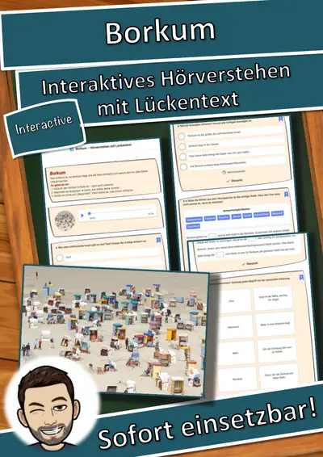
Borkum – Hörverstehen mit Lückentext (interaktiv)

Borkenkäfer – Hörverstehen mit Lückentext (interaktiv)

Braunschweig – Hörverstehen mit Lückentext (interaktiv)

Bolivien – Hörverstehen mit Lückentext (interaktiv)
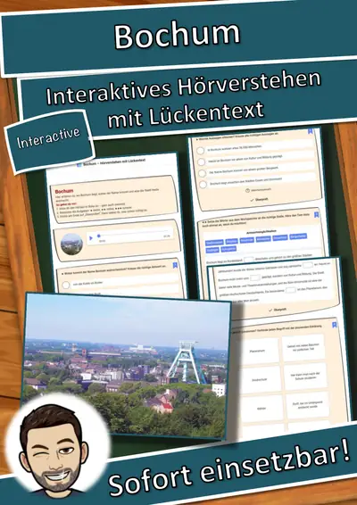
Bochum – Hörverstehen mit Lückentext (interaktiv)
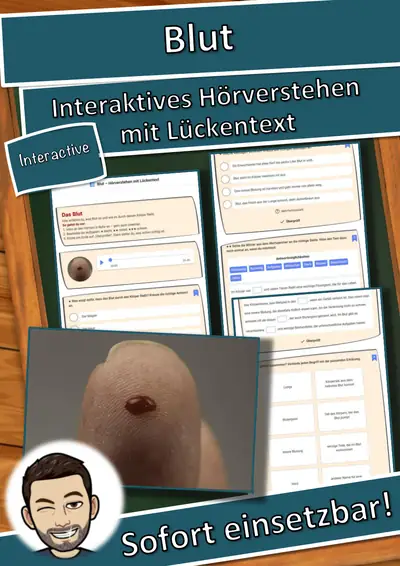
Blut – Hörverstehen mit Lückentext (interaktiv)

Blindschleiche – Hörverstehen mit Lückentext (interaktiv)

Blätterteig – Hörverstehen mit Lückentext (interaktiv)

Bisamratte – Hörverstehen mit Lückentext (interaktiv)

Birmingham – Hörverstehen mit Lückentext (interaktiv)

Beherrschung des Feuers Lückentext mit Wortspeicher Hörverstehen und Suchsel
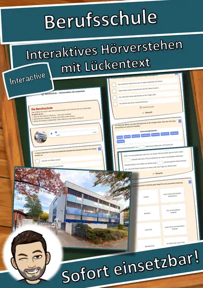
Berufsschule – Hörverstehen mit Lückentext (interaktiv)

Bernstein – Hörverstehen mit Lückentext (interaktiv)

Berner Sennenhund – Hörverstehen mit Lückentext (interaktiv)

Bern (Stadt) – Hörverstehen mit Lückentext (interaktiv)

Bern (Kanton) – Hörverstehen mit Lückentext (interaktiv)

Bergisch Gladbach – Hörverstehen mit Lückentext (interaktiv)

Bermuda – Hörverstehen mit Lückentext (interaktiv)
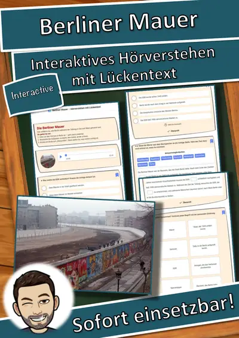
Berliner Mauer – Hörverstehen mit Lückentext (interaktiv)

Berliner Dom – Hörverstehen mit Lückentext (interaktiv)

Belarus – Hörverstehen mit Lückentext (interaktiv)

Beirut – Hörverstehen mit Lückentext (interaktiv)

Bayreuth – Hörverstehen mit Lückentext (interaktiv)

Bayern – Hörverstehen mit Lückentext (interaktiv)

Basilikum – Hörverstehen mit Lückentext (interaktiv)
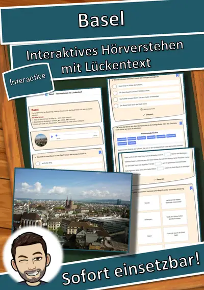
Basel – Hörverstehen mit Lückentext (interaktiv)

Barsche – Hörverstehen mit Lückentext (interaktiv)

Bangladesch – Hörverstehen mit Lückentext (interaktiv)
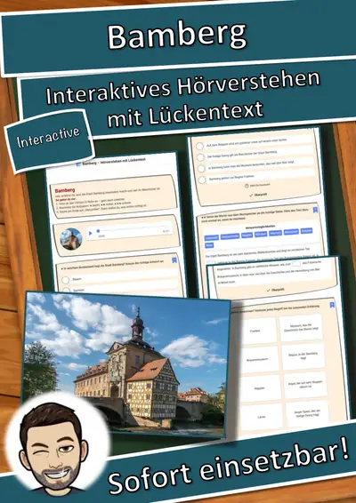
Bamberg – Hörverstehen mit Lückentext (interaktiv)

Ballaststoffe – Hörverstehen mit Lückentext (interaktiv)
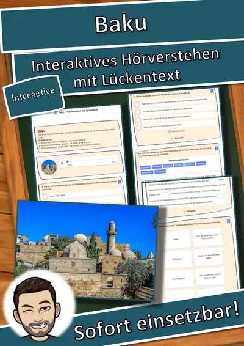
Baku – Hörverstehen mit Lückentext (interaktiv)

Baby-Talk Lückentext mit Wortspeicher Hörverstehen und Suchsel

Baikalsee – Hörverstehen mit Lückentext (interaktiv)

Bahrain – Hörverstehen mit Lückentext (interaktiv)

Bahnhof – Hörverstehen mit Lückentext (interaktiv)

Bahamas – Hörverstehen mit Lückentext (interaktiv)

Bagdad – Hörverstehen mit Lückentext (interaktiv)

Azoren – Hörverstehen mit Lückentext (interaktiv)

Augsburger Puppenkiste – Hörverstehen mit Lückentext (interaktiv)
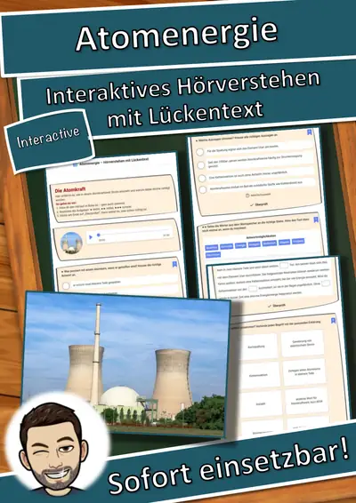
Atomenergie – Hörverstehen mit Lückentext (interaktiv)

Astana – Hörverstehen mit Lückentext (interaktiv)

Aserbaidschan – Hörverstehen mit Lückentext (interaktiv)
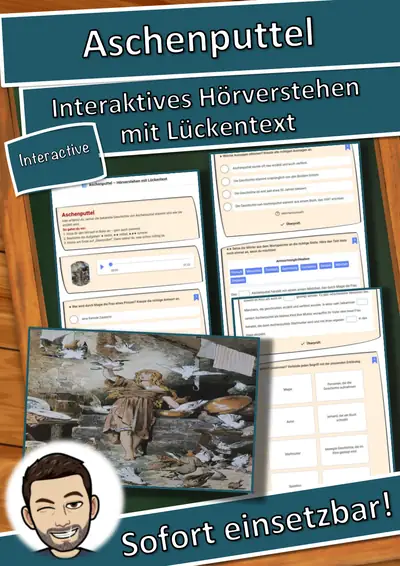
Aschenputtel – Hörverstehen mit Lückentext (interaktiv)

Asche – Hörverstehen mit Lückentext (interaktiv)
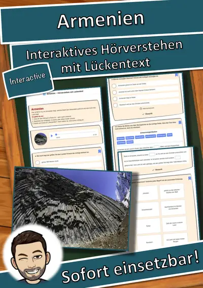
Armenien – Hörverstehen mit Lückentext (interaktiv)

Armbrust – Hörverstehen mit Lückentext (interaktiv)

Aprikose – Hörverstehen mit Lückentext (interaktiv)

Aphrodite – Hörverstehen mit Lückentext (interaktiv)
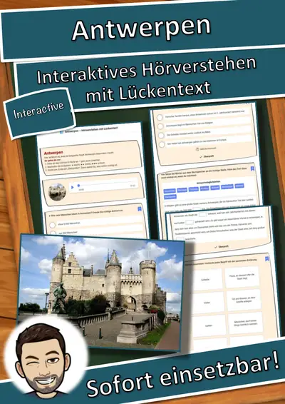
Antwerpen – Hörverstehen mit Lückentext (interaktiv)

Bad – Hörverstehen mit Lückentext (interaktiv)

Antilope – Hörverstehen mit Lückentext (interaktiv)

Angkor Wat – Hörverstehen mit Lückentext (interaktiv)

Andorra la Vella – Hörverstehen mit Lückentext (interaktiv)

Andorra – Hörverstehen mit Lückentext (interaktiv)
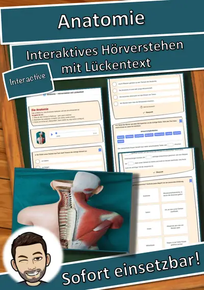
Anatomie – Hörverstehen mit Lückentext (interaktiv)

Anakondas – Hörverstehen mit Lückentext (interaktiv)

Amsterdam – Hörverstehen mit Lückentext (interaktiv)

Altsteinzeit – Hörverstehen mit Lückentext (interaktiv)

Axolotl – Hörverstehen mit Lückentext (interaktiv)

Altes Ägypten – Hörverstehen mit Lückentext (interaktiv)

Altes Griechenland – Hörverstehen mit Lückentext (interaktiv)

Altertum – Hörverstehen mit Lückentext (interaktiv)
Keine Materialien gefunden – versuch einen anderen Suchbegriff oder Filter.